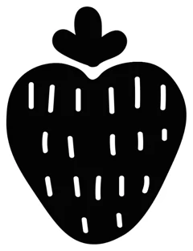
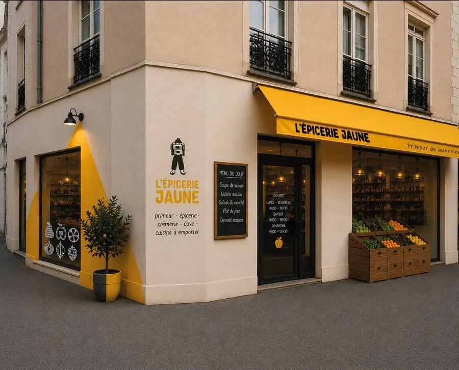

Primeur
Fruits et légumes de saison, choisis chaque semaine. Le cœur de la boutique.
Épicerie & primeur de quartier
primeur · épicerie · crèmerie · cave · cuisine à emporter
Horaires : lun–ven 8h–19h30, sam 9h–19h30, dim 9h–13h

Arrivages
On choisit les fruits et les légumes au fil des saisons. Voici ce qui vient d'arriver.
Conférence et williams
Reinette et golden
Les premières de la saison
Rosés et jaunes
Les rayons
Fruits et légumes de saison, choisis chaque semaine. Le cœur de la boutique.
Huiles, conserves, pâtes, biscuits : les bons produits du placard.
Fromages à la coupe, beurre, crème et yaourts.
Une sélection de vins et de boissons pour accompagner le repas.
Soupe, quiche, salade et plat du jour, cuisinés avec les produits du rayon primeur.
Paniers
Préparés en boutique avec les produits du moment. Demandez-les au comptoir.
pour la semaine
Fruits et légumes du moment, de quoi cuisiner toute la semaine.
pour l'apéro
Fromages de la crèmerie, à partager avec une bouteille de la cave.
pour faire plaisir
Épicerie fine et douceurs, composé avec vous en boutique.
Notre histoire
L'Épicerie Jaune, c'est une boutique au coin de la rue où l'on vient chercher ses légumes, son fromage et son déjeuner. On y choisit les produits avec soin, on y cuisine chaque matin, et on prend le temps de se dire bonjour.
L'équipe de L'Épicerie Jaune
Infos pratiques
| Lundi – vendredi | 8h00 – 19h30 |
|---|---|
| Samedi | 9h00 – 19h30 |
| Dimanche | 9h00 – 13h00 |
